CRE Japan Committee
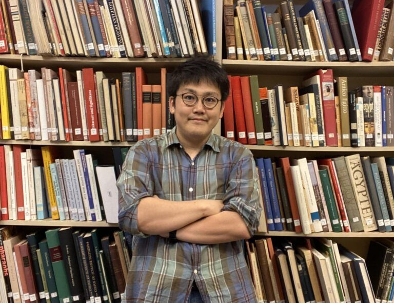
Tokihisa Higo is an Assistant Professor (tenure track) in the Department of Heritage Studies at the University of Tsukuba. He received his PhD from Kansai University (Japan) in 2020 with a dissertation titled A Study of the Ancient Egyptian Concept of Maat: Transitions of the Concept of Maaty (in Japanese). His doctoral research, as well as his ongoing project Exploring Maaty in the Ancient Egyptian Book of the Dead, focuses on the historical transformations of the goddess Maat in ancient Egypt. His work appears in journals such as Bibliotheca Orientalis (vol. 76, 5/6) and the Journal of the American Research Center in Egypt (vol. 60), as well as in Japanese academic publications. With experience in the conservation and management project of an Old Kingdom mastaba tomb at Saqqara, he is currently launching a new management project for the tomb of Irukaptah.
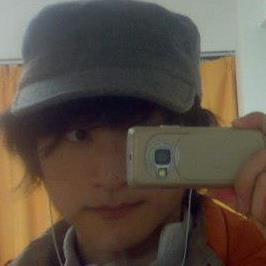
So Miyagawa is an Associate Professor in the Department of Linguistics and Communication Studies at the Institute of Humanities and Social Sciences and the Division of Egyptology at the Research Center for West Asian Civilization, at the University of Tsukuba. He received his Dr.phil. in Egyptology and Coptic Studies from the Georg-August-Universität Göttingen in 2022, following earlier degrees at Kyoto and Hokkaido. A computational linguist and Egyptologist, his work bridges Ancient Egyptian–Coptic linguistics, endangered language documentation, and digital humanities/NLP.
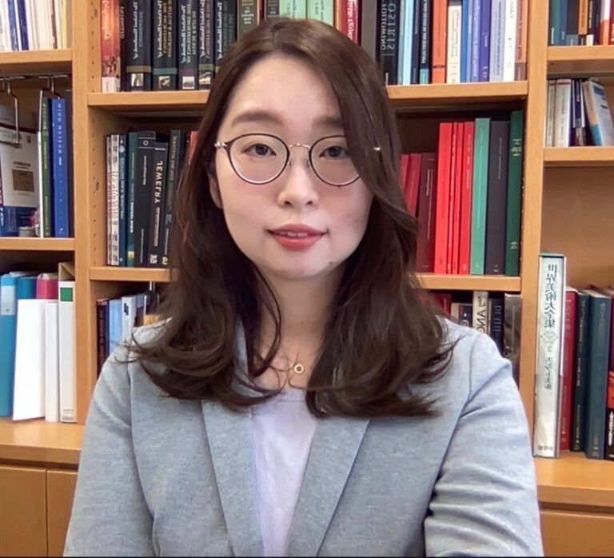
Seria Yamazaki is an Assistant Professor (tenure track) in the Faculty of Letters, Arts, and Sciences at Waseda University. She received her PhD from Waseda University (Japan) in 2021 with a dissertation titled “The Practice and Development of Funerary Rituals in the Middle Kingdom: An Analysis of Object Offering Rituals Based on Coffin Decoration and Archaeological Evidence” (in Japanese). Her research explores the interaction between funerary rituals and society in the Middle Kingdom, through the analysis of coffin decoration and archaeological materials. Her work has appeared in The Journal of Egyptian Archaeology (2025, Online First), Harvard Egyptological Studies vol. 21 (Brill), as well as in Japanese academic publications. She has also participated in archaeological excavations at several sites, including Dahshur.
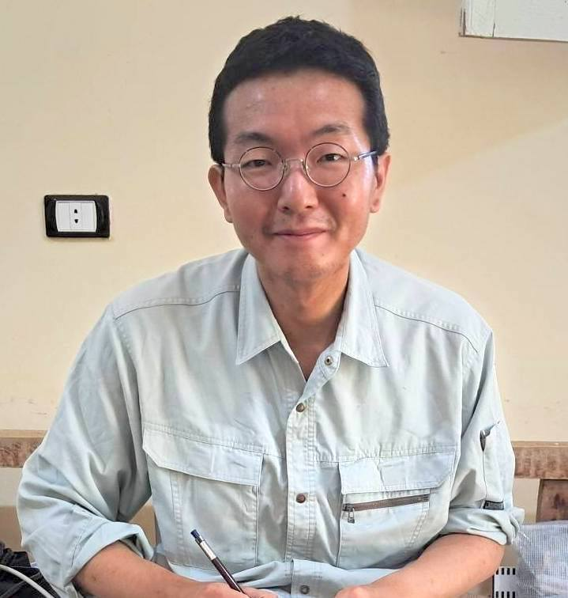
Taichi Kuronuma is an Assistant Professor at the Research Institute for Languages and Cultures of Asia and Africa, Tokyo University of Foreign Studies. He obtained his PhD from Tokyo Metropolitan University in 2019 with a dissertation on mortuary practices and social structure in the Naqada Culture of Predynastic Egypt. He specialises in mortuary archaeology and landscape archaeology, and directs the Bat Digital Heritage Inventory Project for the UNESCO World Heritage Sites of Bat, Al-Khutm and Al-Ayn, as well as the rescue excavations at As-Subaykhi in Oman. Since 2015, he has also been a member of the Gebelein Archaeological Project in Upper Egypt, where he documents Predynastic and Early Dynastic material culture. His research has been published in Open Quaternary, Arabian Archaeology and Epigraphy, Proceedings of the Seminar for Arabian Studies, Polish Archaeology in the Mediterranean, and the Bulletin de l’Institut français d’archéologie orientale, as well as in several edited volumes.
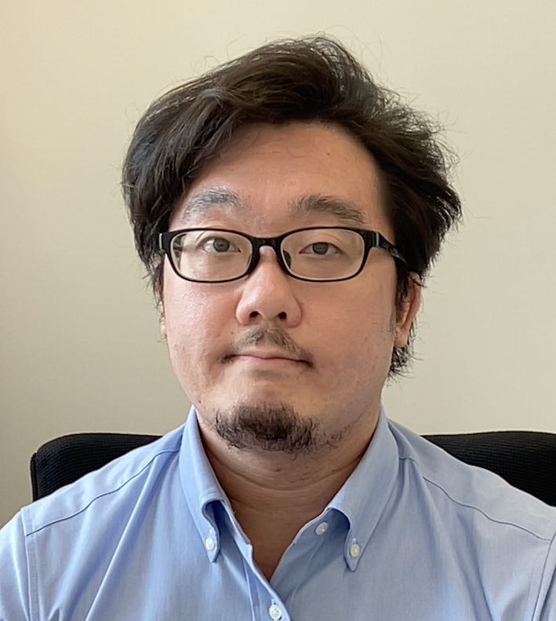
Keita Takenouchi is an invited researcher and a part-time lecturer at Waseda University. He received his PhD from Waseda University (Japan) in 2019 with a dissertation titled Stone Vessel Production and Ruling Strategies during the Egyptian State Formation (in Japanese). His current research focuses on material culture and funerary rituals during the Early Dynastic and the Old Kingdom. He gained excavation experience at Dahsur North, Abusir South, and al-Khokha. and is currently participating in the excavation at North Saqqara (the Japanese-Egyptian Mission, directed by Nozomu Kawai). His work appears in journals such as The Journal of Egyptian Archaeology, Archéo-Nil, Journal of Archaeological Science: Reports, as well as in Japanese academic publications.
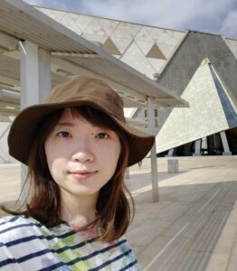
Ayano Yamada is an Associate Fellow at the Tokyo National Research Institute for Cultural Properties. After completing the doctoral course at Waseda University, she has continued her research on non-textual marks in Ancient Egypt, such as masons’ and carpenters’ marks. Since 2011, she has been a member of the Reconstruction Project of King Khufu’s Second Boat, exhibited in the Grand Egyptian Museum, where she documents wooden planks. Her studies focus on ancient shipbuilding techniques and the ritual significance of boat burials during the Old Kingdom. Her works have been published in EDAL: Egyptian and Egyptological Documents Archives Libraries VI and The Journal of the SHOUHEI Egyptian Archaeological Association. She studied at the Czech Institute of Egyptology, Charles University, as a Visiting Researcher with a Czech government scholarship (2018–2020), and currently participates in the joint Egyptian–Japanese archaeological mission at North Saqqara.
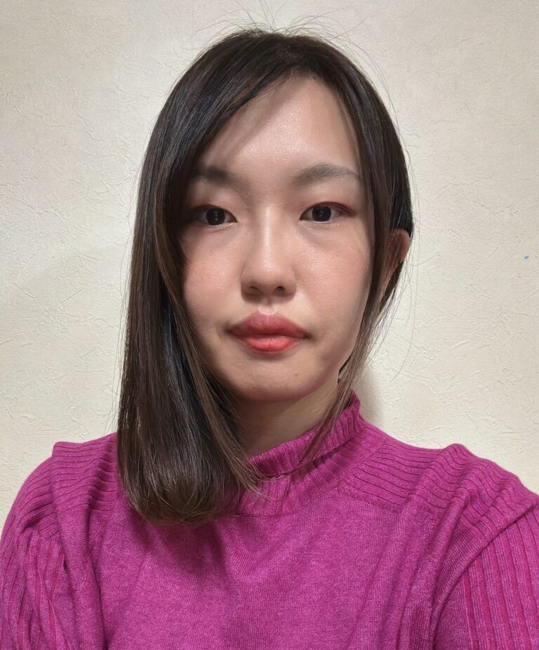
Marina Shimizu, PhD, is a JSPS Overseas Research Fellow and Visiting Researcher at Freie Universität Berlin, as well as a Collaborative Researcher at the Research Center for Cultural Heritage and Texts, Nagoya University. She received her PhD from Nagoya University (Japan) in 2025 with a dissertation titled The Dynamics of Animal Cults in Ptolemaic Egypt. Her research focuses on animal cults in the Ptolemaic Period, contributing to our understanding of how religious practices and economic activities were intertwined in temple societies. Her current postdoctoral project examines the socio-economic system of Ptolemaic Egypt through the study of animal necropolis ware—burial jars for animal mummies. She has conducted fieldwork at Abydos (Sinki), Asyut (Gebel Asyut al-Gharbi), and Akoris (Tehna el-Gebel) in Middle Egypt, specializing in ceramic typology and fabric analysis.
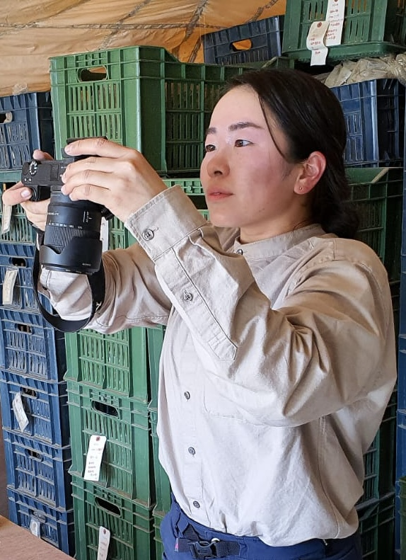
Mutsumi Okabe is a Ph.D. candidate at Kanazawa University, where she received her B.A. and M.A. in Egyptian Archaeology. Her doctoral research examines terracotta figurines of Isis–Aphrodite from a Greco-Roman catacomb at North Saqqara, focusing on their lifecycle, use-contexts, and morphological variability to clarify how these miniature objects mediated practices of cross-cultural interaction in Graeco-Roman Egypt. As a field archaeologist, she has participated in multiple excavation seasons of the joint Egyptian-Japanese archaeological mission at North Saqqara. She has also worked at the Grand Egyptian Museum Conservation Center as an intern of the Japan International Cooperation Agency. In 2025, she served as a visiting scholar at Southern Methodist University (U.S.A.), where she further advanced her research on religious hybridity and cultural entanglement.
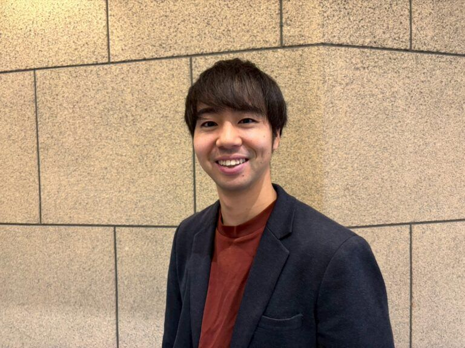
Mizuki Shindo is a PhD student in Graduate School of Human and Socio-Environmental Studies at Kanazawa University. He obtained B.A. and M.A. in Egyptian archaeology from Waseda University. He also studied at Università di Pisa, Dipartimento di Civiltà e Forme del Sapere as a visiting PhD student, and at University of Tsukuba, Graduate School of Business Sciences, Humanities and Social Sciences as an exchange research student. He is researching how ancient Egyptian burial customs transformed, with a particular focus on the non-elite burial customs from the late Second Intermediate Period to the New Kingdom through the analysis of the pit-graves. For his fieldwork, he gained experience at several sites, including al-Khokha, Thebes, and North Saqqara, Dahshur North.
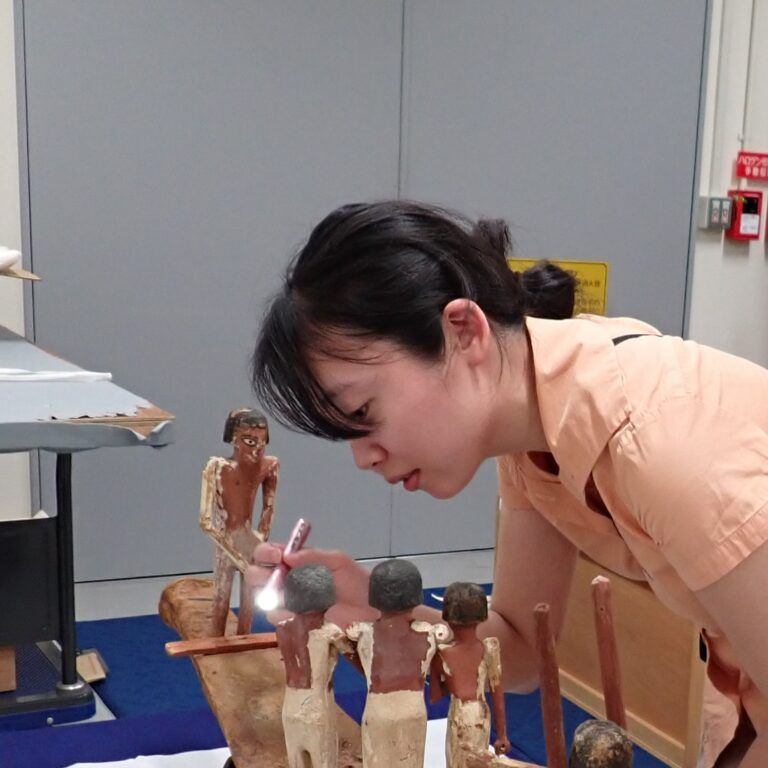
She works as a curator at Okayama Orient Museum. Her recent research focuses on the formation of Egyptian antiquities collections in Japan, examined from both art-historical and history-of-archaeology perspectives, and she presented the results in the 2025 exhibition “Rediscovering the Mysteries of Ancient Egypt: The Gift of the Nile and its Hidden Story.” Alongside her curatorial work, she is a PhD candidate at Waseda University (MA, Waseda University, 2022), focusing on Predynastic pottery. She has conducted research on materials excavated from sites such as Hierakonpolis.
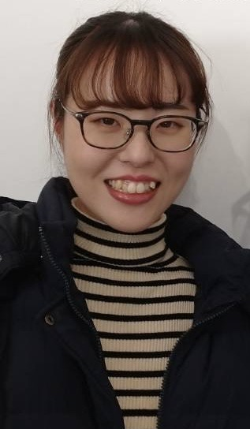
Ayame Miyamoto has been a PhD student in the Graduate School of Humanities and Social Sciences at Hiroshima University since 2022. She earned her BA (2020) and MA (2022) from the same university. From 2023 to 2024, she also studied at the Institute for Ancient Near Eastern Studies (IANES), University of Tübingen, Germany.Her research focuses on ancient Egyptian religious practices, particularly temple rituals and priests during the Ptolemaic period. She is also interested in the relationship between religion and society. The theme of her PhD dissertation is a temple ritual against Seth, preserved on two papyri (P. Louvre N 3129 and P. BM EA 10252) dated to the 4th – 3rd centuries BCE.
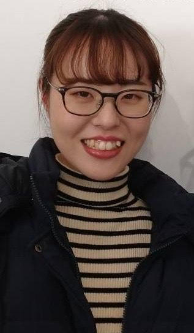
Miona Miyazaki is a third year PhD student in the Faculty of Letters, Arts and Sciences at Waseda University. She has a BA in the Department of Archaeology from Komazawa University, and a MA in the Faculty of Letters, Arts and Sciences from Waseda University. She is researching how the traditions of the Old Kingdom period were used in the Middle Kingdom period, especially focusing on the stone serving statues and the funerary wooden models. Based on the research question, she classifies the form of them, presented part of the research at International Workshop: Studies on Middle Eastern Heritage Science II held at Egypt-Japan University of Science and Technology in 2024. She has excavated tombs of the Middle and New kingdom period in Dahshur North since 2022, and in Luxor since 2023.
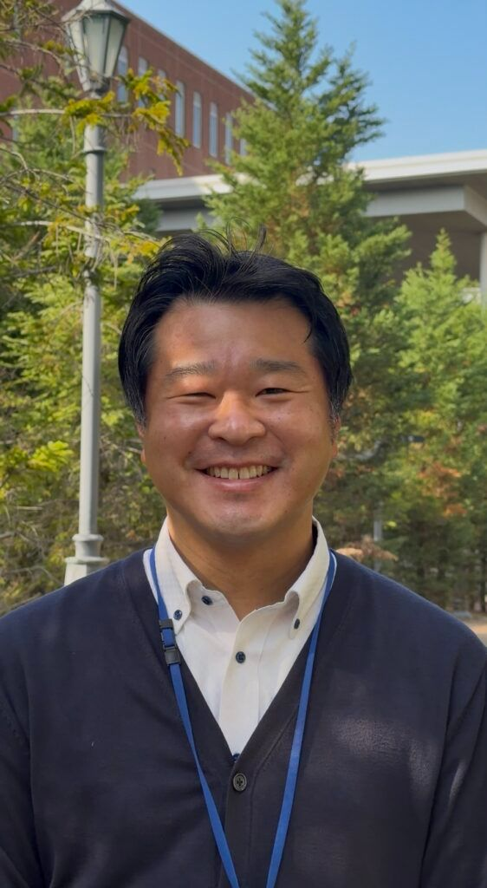
Kato is currently working as a university administrative staff member while pursuing a doctoral degree. For his master’s thesis, he researched stelae excavated at Abydos during the Middle Kingdom period of ancient Egypt, examining the social and economic status of the stelae’s owners. In his doctoral studies, he is researching Middle Kingdom stelae and has an interest in the religion and society of that period. Outside his studies, he enjoys playing sports and has recently taken to playing football.
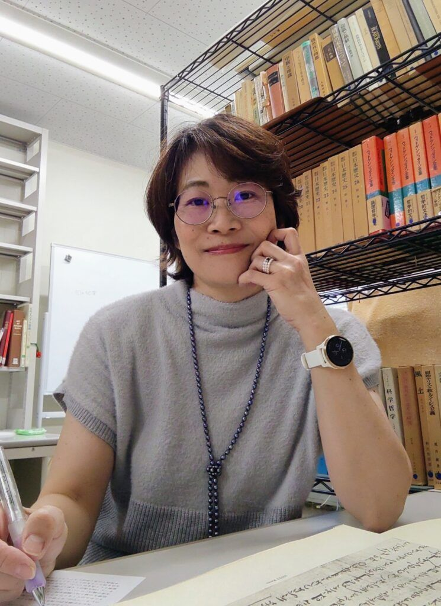
Haruko Kono is a doctoral student at Tokai University. She received her bachelor’s degree in psychology from Meiji Gakuin University in 1994, where she studied counseling psychology and child psychology for children with disabilities. Later, she entered Tokai University to study ancient Egyptian culture. With a particular interest in body adornment, she completed her master’s degree in 2022, focusing on the social role of the distinctive eyeliner decoration in ancient Egypt, and obtained a Master of Literature. She is currently pursuing her doctoral research at the same university, examining the relationship between eyeliner decoration and religious beliefs.
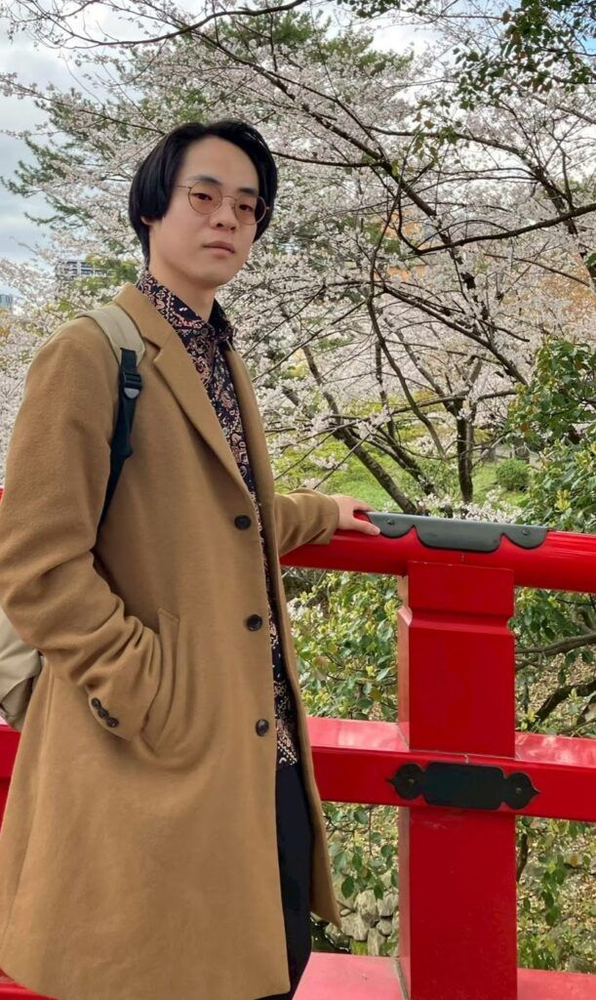
Rikiya Sato received his BA in Literature from Nagoya University and his MA in History from its Graduate School of Humanities. He is currently a PhD candidate in History at the same institution. His doctoral dissertation will deal with the issue of initiative in ruler and emperor worship in Egypt, particularly during the critical transition period from the late Ptolemaic era to the early Roman Imperial period, and from the early Roman Imperial period to the period of the Five Good Emperors. In addition to this primary focus, his broader academic interests extend to the study of wars and art during the late period of the Roman Five Good Emperors. Complementing his textual research, he is also actively involved in practical archaeological fieldwork as a team member, participating in ongoing excavations at both the Sinki Archaeological Project and the Akoris Archaeological Project.